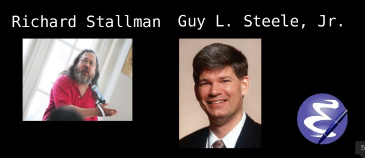
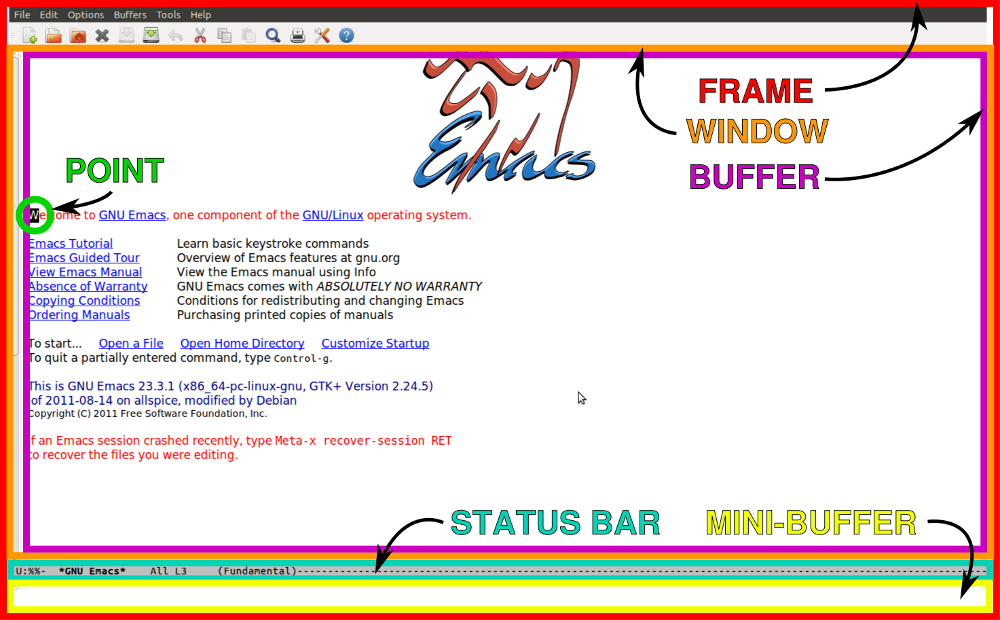
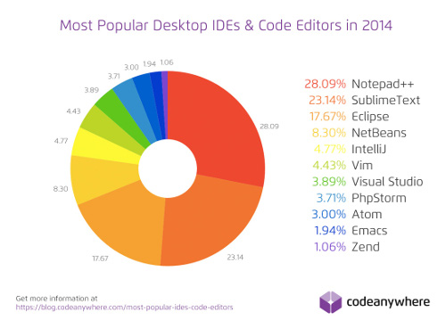
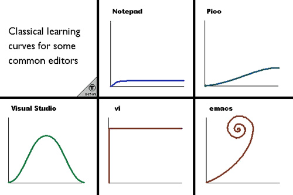

Intro into Emacs (Techtalk #60)
github url: https://github.com/sopier/techtalk_emacs
Table of Contents
1 Emacs at a Glance
1.1 Define
GNU Emacs is an extensible, customizable text editor—and more. At its core is an interpreter for Emacs Lisp, a dialect of the Lisp programming language with extensions to support text editing. 1
Emacs is not an extensible text-editor. It's a programming environment with a nice built-in library for editing text. 2
1.2 Emacs Creator

Emacs was created by Richard Stallman and Guy L. Steele in 1976, using Emacs Lisp, a dialect of Lisp language. There are many Emacs variant, but the most widely used was GNU Emacs by Richard Stallman.
1.3 Emacs Logo

1.4 Emacs Terminology

2 Why Emacs?
- It's not just an editor, everything is possible [
Almost to be exact:) ] - Divine Editing Experience 5
- custom jump-start
- org-mode
- keyboard macro
- clear ring
- expand-region
- multi-cursor
- ace-jump-mode
- key-chord
- helm-mode
- Emacs is extensible 6
- Integrates well with lots of external tools
- shell-mode, ansi-term, eshell
- dired 7
- cvs, svn, bazaar, git, mercurial
- proced (emacs process manager)
- Emacs Doesn't let you repeat yourself 6
- Emacs is Modern
- GTK2/3, Coca, WinAPI
- OSes clipboard support
- TTF Fonts support 8
- apt-get or brew like package manager
- Emacs is constantly evolving
- Other prominent tools use Emacs's keybindings
- bash, zsh, Cocoa toolkit use Emacs keybindings by default
3 Emacs vs the World
- IDE and Code Editors Stats 2014 9

- Emacs vs vim
Emacs pros:
- it has better default extension language.
- it's modeless.
- it has better integration with external systems.
- it has better support for the things that matter to me. 10
- it has a built-in package manager.
Vim pros:
- nicer navigation
- much smaller core and much faster to load
- very simple initial config
- it has a more stylish icon than Emacs :)
- Emacs vs IDEs
IDEs pros:
- good refactoring support
- semantic code analysis
- integrated GUI debuggers and GUI design tools
- precise auto-completions
- good integration with external systems, i.e. version control
IDEs cons:
- dependent to the mouse and an X environment
- not resource efficient
- IDEs impair your thinking by thinking instead of you
4 Problems
- No adequate embedded browser in Emacs!
- Still have to learn Lisp to extend Emacs more
- Emacs Pinky
5 Getting Started with Emacs

It only takes 2 steps:
- run the built-in Emacs tutorial
C-h t. - use Emacs day and night for all your work or even use it as your window manager. 11
6 Conclusion
- However, whatever your editor choice is, as long as you feel efficient and productive, then it's good…
- Lastly, you are not picking Emacs vs others, but rather you are picking Emacs and others! Use the best tool for the job.
7 Dotfile
my ~/.emacs file
8 Further References
- http://www.emacswiki.org/
- http://ergoemacs.org/emacs/emacs.html
- http://www.masteringemacs.org/
- http://emacsrocks.com/
- http://whattheemacsd.com/
- http://emacsredux.com/
- http://sachachua.com/
- https://www.youtube.com/watch?v=16Rd46SE-20
- https://www.youtube.com/playlist?list=PL8tzorAO7s0he-pp7Y_JDl7-Kz2Qlr_Pj
- http://www.howardism.org/
- http://endlessparentheses.com/
- http://bling.github.io/blog/2013/10/27/emacs-as-my-leader-vim-survival-guide/
- http://www.reddit.com/r/vim/comments/22w1li/a_fair_comparison_between_vim_and_emacs/
9 Q/A
Ask me for questions
10 Thank You
About me:
- twitter: https://twitter.com/sopier
- fb: https://www.facebook.com/kholid.fuadi
- github: https://github.com/sopier
Footnotes:
1 github url: https://github.com/sopier/techtalk_emacs https://www.gnu.org/software/emacs/
2 github url: https://github.com/sopier/techtalk_emacs Austion Bingham at Youtube
3 github url: https://github.com/sopier/techtalk_emacs demo.py
4 github url: https://github.com/sopier/techtalk_emacs wikipedia
5 github url: https://github.com/sopier/techtalk_emacs demo.txt demo.js
6 github url: https://github.com/sopier/techtalk_emacs snippets.el
7 github url: https://github.com/sopier/techtalk_emacs dired_demo
8 github url: https://github.com/sopier/techtalk_emacs arab.txt
9 github url: https://github.com/sopier/techtalk_emacs codeanywhere
10 github url: https://github.com/sopier/techtalk_emacs tesis.org beamer.org
11 github url: https://github.com/sopier/techtalk_emacs howardism
12 github url: https://github.com/sopier/techtalk_emacs survival guide video 1 video 2
13 github url: https://github.com/sopier/techtalk_emacs http://www.youtube.com/results?search_query=emacs